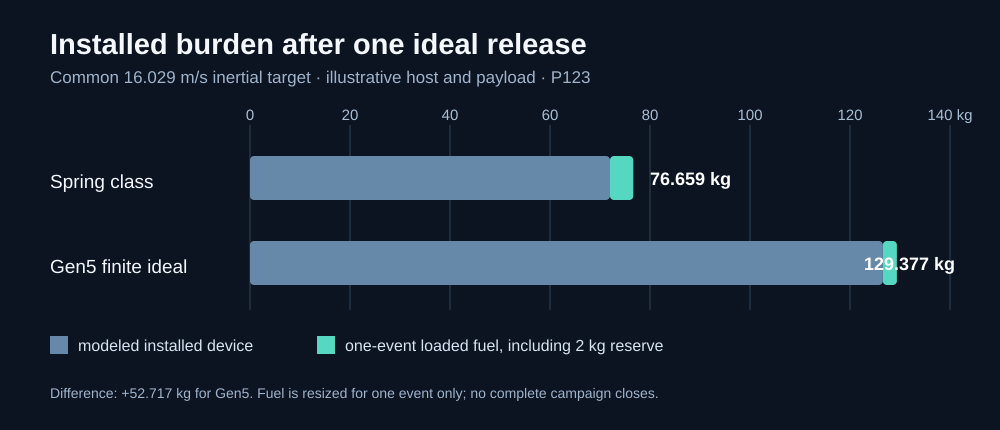
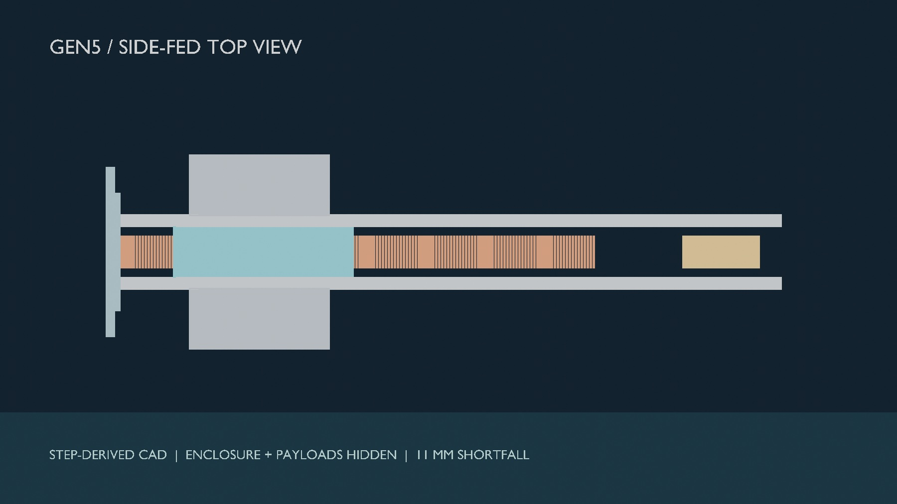
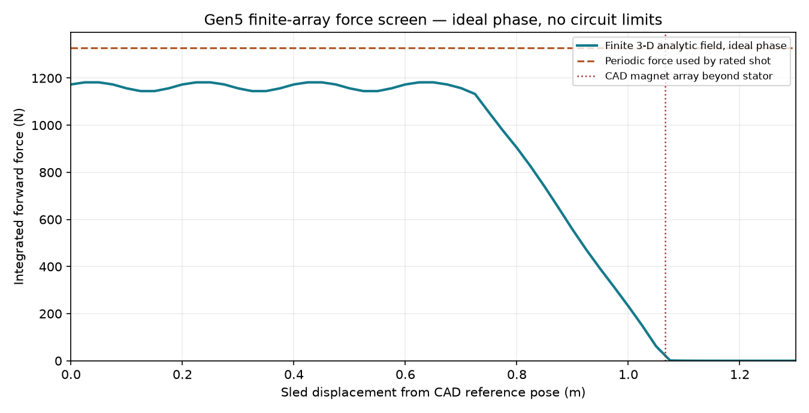
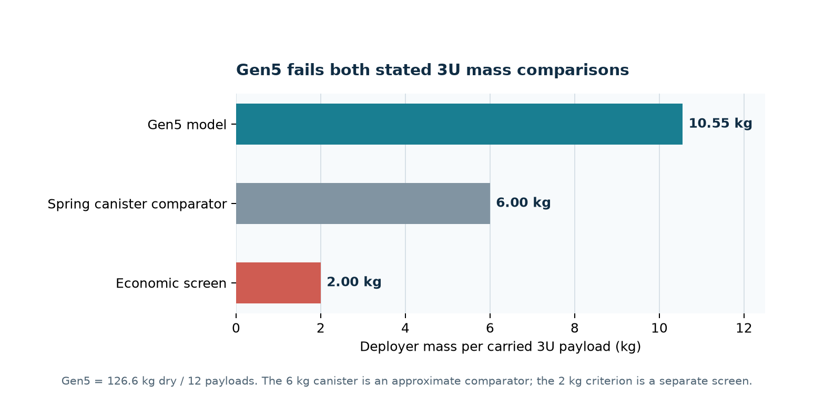
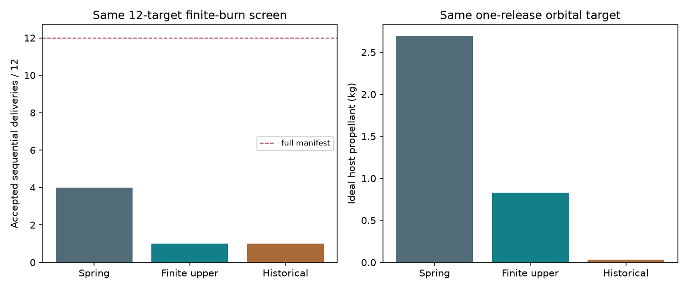

Follow one 3U payload through the machine.
The animation uses the checked Gen5 STEP review solids. It shows the intended order of actions, while hiding the enclosure and near cassette shell so the path is visible. Motion paths are illustrative: the lateral actuator, retention, release contact, moving clearances and sled arrest are not validated.
- StoreTwelve 3U envelopes are depicted in two side cassettes. Launch retention is unresolved.
- HandoffOne payload moves toward the common sled. The feed actuator and contact are unselected.
- AccelerateSled and payload follow the powered stroke. The finite force screen is ideal phase, without a selected inverter.
- DepartThe payload continues and the sled stops. Separation and brake dynamics are untested.
Download video, stage views and provenance ↗ · Static fit failure ↗
The finding is part of the product work.
The reference arrangement is a reproducible design study. It is not a qualified deployer or an accepted final configuration. These values separate predictions from exact-solid geometry checks.
Ideal phase, finite 3-D geometry; circuit losses omitted. The historical 16.029 m/s periodic-force result is challenged.
Ideal in-plane work on a 1 mm mesh. It corroborates finite-stator decline within the stated model limits.
Modeled dry mass per customer; 76% above an approximate 6 kg canister comparator.
Two side cassettes and the track do not fit within the stated inner width. Exact solids also intersect.
Faster release does not erase installed mass.
In a matched one-event reference, ideal finite-force Gen5 uses 1.866 kg less host fuel than a spring class when both carry 10 kg. Its modeled device is 54.562 kg heavier. If fuel is hypothetically resized for only that event and equal reserve, Gen5 still carries 52.717 kg more device plus fuel.
At the same ideal speed, that narrow parity screen requires about 52.630 kg less Gen5 device dry mass. It is a redesign target, not a selected solution, complete twelve-shot mission or validated motor rating.

Geometry, forces and system burden.
All imagery is sourced from CAD or computation. None depicts hardware testing.




R1 repairs a path. Gen6 must prove a service.
A widened R1 candidate clears twelve scripted 3U envelope routes. It has no selected lift actuator, launch retention, tolerance closure or revised installed mass. It is not the evaluated Gen5 baseline.
Gen6 is the proposed first instrumented prototype programme for a mission-derived command and load envelope. The 1 km/s-class objective is separate long-range research; no Gen6 mechanism or speed has been validated.